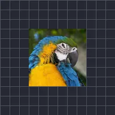

Desplazamiento

Desplaza la imagen de la capa, repitiéndola en los bordes de su caja.
Ajustes
| Ajuste | Tipo | Rango | Predeterminado |
|---|---|---|---|
| Desplazamiento | Punto (X, Y) | -5000 px a 5000 px | 0 px, 0 px |
| Difuminado | Número | 0 a 1 | 0 |
| Enmascarar a capa | Activado o desactivado | – | Desactivado |